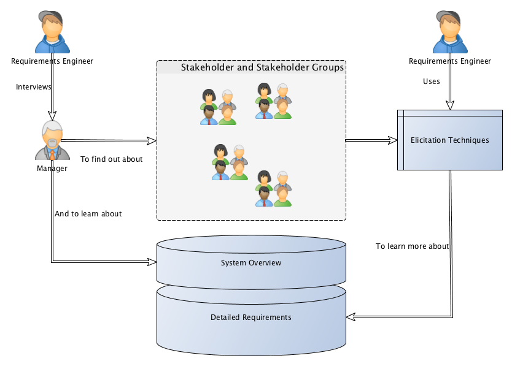
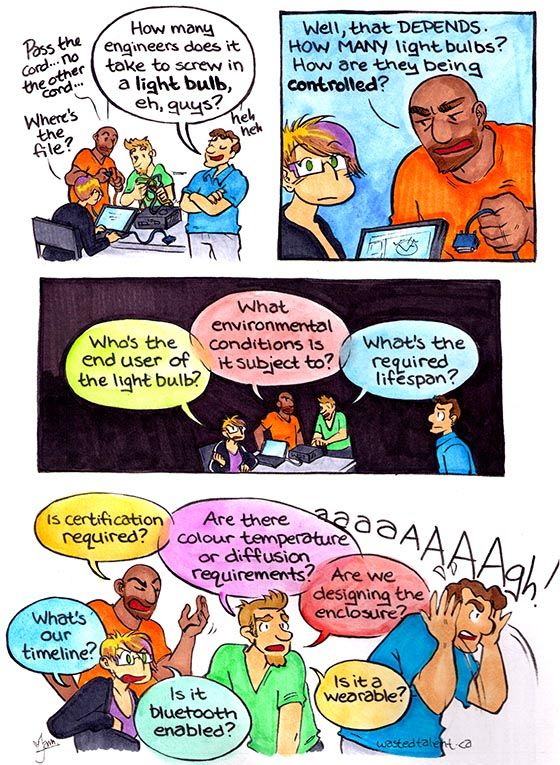

Requirements Engineering
Table of Contents
1 About This Sprint
This sprint briefly introduces the topic requirements engineering.
For more information on this topic, see e.g. the course PA2551 Kravhantering och Produkthantering.
2 User Stories covered in this Sprint
- As a requirements engineer I want to know who may have requirements on the system we are building so that I can make sure that all needs are met.
- As a requirements engineer I want to have a range of methods for finding requirements so that I can choose the best method for each person or source of requirements.
- As a requirements engineer I want to document the found requirements so that I can discuss them with the customer.
- As a requirements engineer I want to document the found requirements so that I can communicate them to the developers.
- As a project manager I need to decide what to focus on building right now so that I best satisfy all customers’ expectations.
3 Introduction
Before you start designing your system, you need to find out what to design and build. There are of course different ways of doing this. The traditional way advocates that you need to fully understand the entire system before you go ahead with the design (cf. waterfall development), whereas at the other end the agile approach (e.g. as advocated by eXtreme Programming and the Agile Manifesto) is that you should only do as much requirements engineering up front as is necessary to understand how to start building, since the requirements are going to change anyway. Note that they do not say “Don’t do it!”; they say “Do as little as possible, but not less”.
It is thus important to decide early how much requirements engineering you should do before you start with the project. Incidentally, there is a difference between the traditional, so called bespoke requirements engineering where you start a project when a customer knocks on the door and then you do requirements engineering as part of that project, and the continuous requirements engineering where you always do requirements engineering and spawn new development projects as a result of the requirements engineering process. The latter suits the type of products that you develop and sell to more than one customer, while the former is more suitable for one-off projects. For this course, I would suggest a pragmatic approach (akin to the agile way): Do as much requirements engineering so that you have a rough overview of what the system should do, and do proper requirements engineering on what you need to know do make a Minimum Viable Product.
There are many sources and techniques for doing requirements elicitation (i.e., finding the requirements), from reading the old documentation, analysing competitor’s products, interviewing users, running surveys among user groups, or simply inventing the requirements yourself. If you do requirements engineering you will be using a mixture of these. Typically, you will start by doing an unstructured interview with a manager to get a broad overview of what they want the system to do. You will then try to define end user groups and find a couple of representative persons from each user group and conduct further interviews with them. At first, these interviews will be exploratory and unstructured, but will pretty soon become semi-structured as you learn about the major features of the system, so that you will be getting further details about each of these major features.
Finding out who may have an interest in the system (a stakeholder) is so important that I have even added a separate user story for it in this sprint. This is not limited to end-users. Other stakeholders may include (but is not limited to): the organisation that is going to maintain and continue development of the system, system service technicians that will be doing backups and adding users and other running maintenance, external parties that you may connect to (for example banks to deal with payments), legal texts (that’s right: a text can be a stakeholder), other departments in the organisation you build for that require your system to jack in with their processes, and so on.

Figure 1: Requirements Engineering Overview (Simplified)
3.1 Interviews
I’ve already touched upon elicitation techniques. The one you are likely to use the most is Interviews. “Interview” is actually a cover-all phrase that encompasses a whole range of different techniques that involves two people or more with (at least) voice contact. You may thus do interviews over phone, but I would not recommend it since you loose a lot of nuances that can be learnt by observing body language. Video conference or face-to-face meetings IRL are the most common interview settings. You can be one person interviewing one other person, or there can be more people either doing the interview or being interviewed (although at some point it is perhaps better to run the meeting as a focus group).
In its most simple form, you conduct the interview as an open interview with open answers. In this setting, you basically just talk, and together explore what the application should do. You rarely have the luxury to be this unstructured, even in the first interview. I would recommend you to do as much homework as possible beforehand so that you have at least a small set of starting questions that you can use to get the interview going and to get back on track when you feel that you have diverged too far from the interview goals. Having a set of questions moves the interview into a semi-structured format, where you are able to follow up on the answers given with further impromptu questions. The extreme is a structured interview where you have a specific set of questions that you want answered in a particular order without room for any further probing. This is typically only used in research contexts.
Similarly, you can allow open answers, typically early on when you want to explore and look for new information, or you can restrict the answers to a closed answer space, where each question can e.g. be answered with one of four alternatives. This is good for confirming what you have previously learnt; you can collect answers from larger groups of people and quickly analyse them, and the idea is that at that stage you should not expect to find any new information.
Thus, a requirements engineer will probably use semi-structured open answered interviews. In this course, however, this will not be the case as it would be out of scope for the course. You will instead have to create the requirements yourself (more on this under the Experiential Learning in this sprint).
How you behave during an interview influences the results, because your behaviour can make the interview subjects more or less prone to answer your questions. In Table 1 I have compiled a list of do’s and don’ts in interview situations (we have actually used this list to assess requirements elicitation interviews in the requirements engineering courses at BTH).
| Do | Don’t |
|---|---|
| Do prepare thoroughly for the meeting | Don’t put your laptop on the table as a wall between you and your client |
| Do prepare a checklist for the meeting | Don’t keep your cap on your head |
| Do introduce yourself properly | Don’t interrupt the customer |
| Do ask about access to stakeholders | Don’t interrupt each other |
| Do ask about access to previous systems | Don’t take no notes |
| Do book the next meeting | Don’t record the interview without asking |
| Do ask about quality requirements | Don’t assume stuff |
| Do make sure you know who you are talking to, and why | Don’t provide requirements |
| Do ask about deadlines | Don’t provide goldplating |
| Don’t technobabble | |
| Don’t sit quiet | |
| Don’t kiss up (too much) | |
| Don’t follow your meeting checklist manically | |
| Don’t share war-stories about other customers and systems | |
| Don’t ask about the budget at the first meeting | |
| Don’t argue among yourselves |
3.2 Specification
Once you have found the requirements, your next step (after analysing them and negotiating them with the customer, but that is also outside the scope of this course) is to Specify the requirements. There is an IEEE standard, IEEE 830, for how to structure your requirements document, assuming you specify requirements in the traditional way. The good thing about this is that it has existed for many years, and people are used to seeing it and signing contract based on it. The bad thing about it is that it is not as well known or easy to understand as requirements engineering researchers would like to think it is, and with a few minutes of education I am certain that you will be able to educate your customers on any document and requirements format you choose.
IEEE 830 Standard for Software Requirements Specifications
- Introduction
- Purpose of the Requirements Document
- Scope of the Product
- Definitions, Acronyms, and Abbreviations
- References
- Overview of the Remainder of the Document
- General Description
- Product Perspective
- Product Functions
- User Characteristics
- General Constraints
- Assumptions and Dependencies
- Specific Requirements Functional, non-functional, and interface requirements
- Appendices
- Index
To simplify, there are two plus one ways of writing requirements. The two ways are traditional requirements and user stories. The plus one way is UML use cases. UML:ists themselves claim that use cases are not requirments, they are merely scenarios where one or several requirements are “exercised”. I would rather avoid re-formatting the requirements once more and just add more documentation that will only be used once, so I would try very hard to get away with only documenting the requirements within the context of a use case if I must use them.

Figure 2: Two plus one way of specifying requirements
Traditional requirements may be specified as figures, tables, sketches, or plaintext, with the plaintext version being the one most commonly discussed. They usually follow a standardised format with a number of attributes per requirement (title, description, source, date, etc.), and a standardised template for the actual requirement. User Stories are supposed to be less documentation so they try to include the most relevant of all of this information into a single one-liner. Shorter iterations, a more direct path from inception to implementation, and closer collaboration with the customer makes it easier to do away with a lot of the information considered necessary in traditional requirements.
User stories are intended to be kept simple while still covering the most important information. They are often written according to a standard template: As a <type of user> I want <some goal> so that <some reason>.
With this template, we get the most important information, namely what you want the system to do (“some goal”), who“ wants it (”type of user“) so that you can go back and get more information, and put the requirement into context of what else this type of user wants with the system, and a /motivation for the requirement (“some reason”), so that you can better understand exactly what the user desires to do and why. This will help you make reasonable assumptions about how to implement the requirement.
UML use cases are covered in a different course sprint, so I will only briefly mention them here. With a use case, you are attempting to put the requirements into a context. Of course, this means that you need to write more, since you also need to add information about the context. This is one of the reasons why they are not considered requirements – they are simply too verbose. This verbosity also means that a developer is unlikely to do use cases for every requirement and every part of the system; but will rather do them for those parts of the system where there is a usage flow that is difficult to grasp in one sentence, and where you are likely to hold a “conversation” with the system to fulfill a higher need. For example, searching for a hotel room is a one-liner. Booking a room on the other hand may involve
- a search
- a narrowing of the results to specific types of rooms
- a check whether the room is available
- a selection of the room
- input of information about the person booking the room, and
- a confirmation that the room is booked.
Each of these items may, in turn, comprise more than several requirements, including at least one requirement that restricts the order in which these actions must be performed.
3.3 Prioritisation

So, which requirement should you focus on developing first?
In traditional requirements engineering, there is a whole phase solely dedicated to requirements prioritisation. Agile software development methodologies (such as Scrum) also assumes that you always have your user stories prioritised in your backlog. Essentially, you are doing insertion sort whenever you add a new user story, while also checking that the priority of the existing items do not change as a result of adding the new user story. Each sprint begins with a review of the backlog, before you select among the top prioritised user stories which you should develop in the sprint. If the user story is really big (called an epic), one of the actions you may do is to break it down into more manageable user stories and put these into the backlog.
This, of course, does not answer the question since it only explains how you decide, but not on what grounds. Also here, you can probably build a research career on deciding which factors should influence your prioritisation (see, for example, Ruhe and Saliu’s paper “The art and Science of Release Planning” 1), but a few good starting points are:
- Value for the customer
- Cost of implementation (Cost and Value can be nicely combined as e.g. Karlsson and Ryan 2 shows).
- Penalty for not implementing
UML/RUP would advocate that you wait with prioritising your requirements and instead prioritise the UML use cases, so that you deliver the most important features first. This does not mean that you need to implement the full flow of events in one go; always keep the Minimum Viable Product in mind.
Epics are bigger user stories, but not necessarily more important.
For example, the epic “As a manager I want us to support Chinese characters so we can enter the chinese market” is really big, but maybe not very important. Conversely, the user story “As a user I want to be able to abort a transaction so that I am able to change my mind at any time” is much smaller, and way more important.
3.4 Summary
Requirements Engineering is a big topic, and can be quite complex. The introduction above is just meant to get you started. I have, for example, only touched upon the difference between bespoke and market-driven requirements engineering. I have not mentioned any of the challenges involved when you do large scale requirements engineering or very large scale requirements engineering. Nor have I gone through all the different techniques available for eliciting requirements, checklists for analysis, requirements verification, etc. etc. You will get some more information about some of these things in the screencast “Requirements Engineering”, and for the rest I direct you towards one of the requirements engineering courses offered at BTH.
I include some of the UML Use Case learning material in this sprint which will give you a head start for the next sprint, but the focus on what you are expected to do is “traditional” requirements engineering.
A note also about elicitation techniques: I say earlier that you are most likely going to use interviews. Well… In this course that’s not quite true. In this course you are going to create the requirements yourself, based on a brief system description.

4 Learning Material
4.1 Book Chapters
- C. Larman, Applying UML and Patterns, 3rd Edition, Chapters:
- Inception is Not the Requirements Phase
- Evolutionary Requirements
- Use Cases
- Other Requirements
4.2 Screencasts
5 Experiential Learning
5.1 Sprint Test Plan
Go through the user stories for this sprint and make sure you have a clear understanding of how to solve each of them.
Revisit and update your risks and contingencies section.
Add and/or revise the following items to your glossary:
- Requirements Engineering
- Requirements Elicitation
- Stakeholders
- Software Requirements Specification (SRS)
- RFC 2119
- Requirements Prioritisation
- Quality Attribute (Also: Non-functional Requirement)
- User Story
- Epic
- Backlog
- Acceptance Test
- Use Case
Make sure you understand what each item is, the notation for them, and how to use them either in isolation or together with the other concepts.
5.2 Self-Study: Requirements Interview
Let’s say you are going to build a student simulator. As a part of this you need to find out the morning practices of a typical student.
Interiew a couple of student colleagues on what they do in the mornings. Try to plan beforehand, and have your colleague assess what you do good and what you can improve during the interview.
5.3 Self-Study: Requirements Specification
Try to write down a common process for what you elicited above, i.e. the “getting up, getting ready, and getting to uni in the morning”-process.
Express this process as:
- regular requirements (consider their apartment, their mother, the bus, etc. as part of “the system”)
- user stories (think about the role they have for each part, and the motivation for why they want something done)
- use cases (consider their apartment, their mother, the bus, etc. as part of “the system”)
5.4 Update Course Backlog
How do you translate your user stories into UML use cases? How do you use the prioritised order to decide on a development schedule? Why are you specifying your requirements first as user stories if you are then going to re-specify them as UML use cases immediately afterwards?
What other means are there for eliciting requirements? How may you gain experience in using them?
Are there any other questions that you want answered? Add them, along with a brief strategy for how to find an answer.
6 Sprint Acceptance Tests
You are done with this sprint when:
- You have read the Learning Materials.
You may also have
- Updated your Sprint Test Plan
- Updated your Course Backlog
- Performed self-study requirements interviews
- Documented the results from the self-study interviews in different formats.